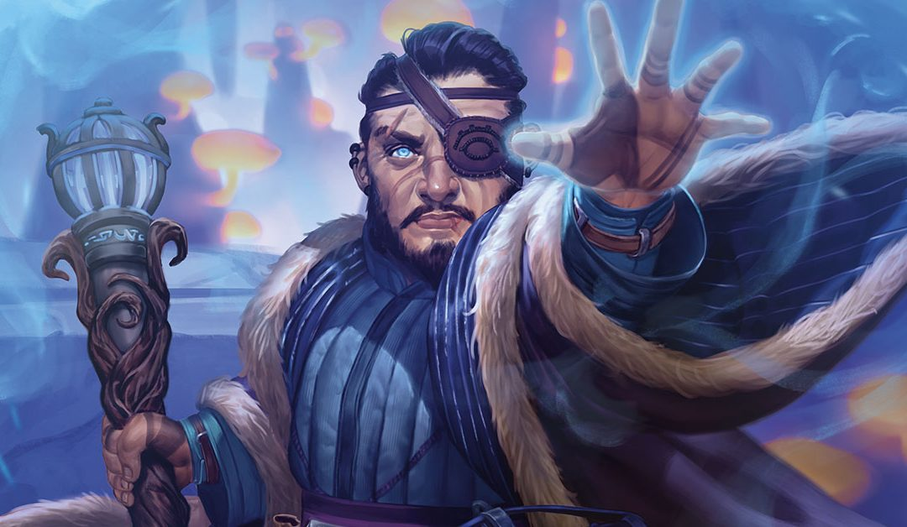

Esta clase destaca por su versatilidad debido a sus hechizos, son una navaja multiusos que pueden hacer muchas cosas, también pueden recargar parte de sus hechizos a mitad de aventura, pero son una de las clases con menos vida y defensa del juego.
Los magos, como todos sabremos, lanzadores de hechizos por excelencia, la diferencia con el resto de clases mágicas es que un mago recibe su poder del estudio, podiendo copiar hechizos de otros libros de magos y teniendo acceso a muchos hechizos, esto como menciono arriba les da mucha versatilidad, ya que hay un hechizo para casi cualquier situacióna, además su clase les dan una manera de recuperar conjuros a mitad de aventura. El problema de esta clase es que hay que tener mucho cuidado en situaciones peligrosas y hay que estar resguardado por tus compañeros, ya que es una clase con vida baja y casi sin armadura de base, hay formas de remidiarlo,tranquilos, eso si, que no os quite las ganas probarle, siempre es divertido enfrentarte a un grupo de enemigos y tirarles una bola de fuego.